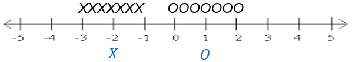
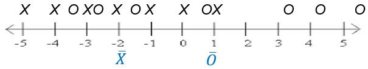
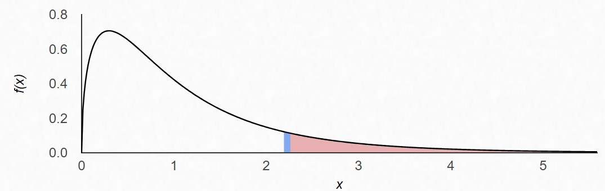
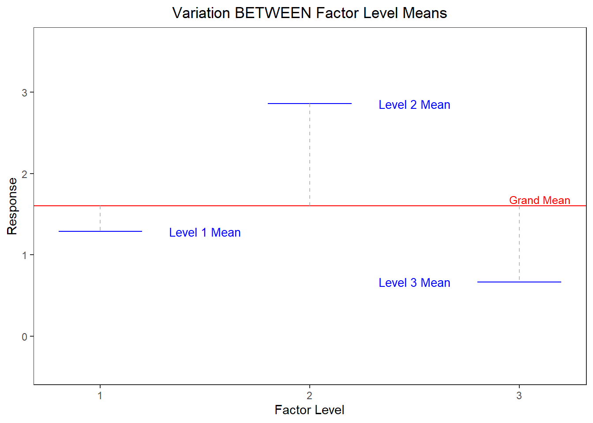
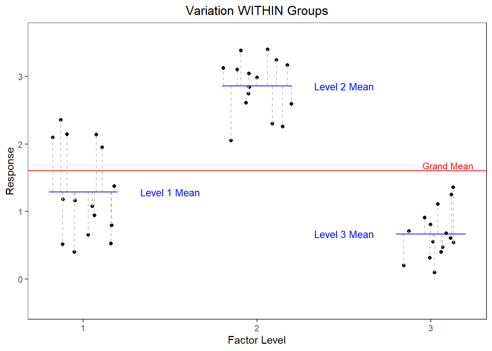

ANOVA and the F-Test
Introduction
With the effects model defined we will want to test whether the treatment factor(s) has a statistically significant effect on the response variable. In other words we are interested in testing the hypotheses:
\[ H_0: \alpha_1 = \alpha_2 = ... = 0 \]
\[ H_a: \alpha_i \ne 0 \text{ for at least one i} \tag{1}\]
Where \(\alpha_i\) represents the effect of a factor level.
Testing whether the effects are all equal to each other is incomplete, you must include the zero. Since all level effects must sum to zero for a given factor, the only way all effects can be equal is if they are all zero.
Analysis of variance (ANOVA) is a statistical technique that allows us to simultaneously test all factor level effects at the same time.
By the end of this section you should be able to state a hypothesis for each term in an ANOVA effects model, calculate and explain the meaning of all the pieces of an ANOVA summary table output, and use the ANOVA summary table to conduct a test of the stated hypothesis.
Other Analysis Tools
Multiple t-tests
At this point it is reasonable to ask if we couldn’t arrive at the same conclusion by simply conducting multiple t-tests. For example, you could do a t-test for each factor level to determine if the effect is significantly different from zero. Or you might consider testing each combination of factor level effects to see if they are equal to each other.
The multiple t-test approach has a couple of a drawbacks. The first drawback is that it becomes a real burden to run, present and interpret a lot of tests if there are many levels to a factor. If there are only 3 or 4 factor levels and only 1 or 2 factors in the analysis, conducting many tests may simply be an annoyance. However, if many factors and/or many factor levels are involved the magnitude of tests may bog down your analysis.
The other main drawback of using multiple t-tests is more substantive and has to do with the probability of a Type I error. Suppose the treatment factor in our study has 3 levels. The null hypothesis associated with an ANOVA that tests all factor level effects simultaneously is:
\[ H_0: \alpha_1 = \alpha_2 = \alpha_3 = 0 \]
Testing at a 0.05 significance level means there is a 0.05 probability we will incorrectly reject this null hypothesis (i.e. commit a Type I error). Conversely, there is 0.95 probability we will NOT commit a Type I error.
If we attempt to approach the problem by conducting multiple t-tests, we would test the following set of null hypotheses:
\(H_0: \alpha_1 = 0\) and \(H_0: \alpha_2 = 0\) and \(H_0: \alpha_3 = 0\).
We may conduct each of these tests at the 0.05 significance level. Incorrectly rejecting the null hypothesis on any one of these tests would result in the same Type 1 error as incorrectly rejecting the null hypothesis of our ANOVA test of all the effects simultaneously.
So what is the probability of committing a Type 1 error in at least 1 of these 3 tests? The simplest way to find the probability of committing at least one Type 1 error in the 3 tests is to calculate \(1 – P(\text{no Type 1 errors in all three tests})\). As previously stated, the significance level (0.05) of each test represents the probability of a Type 1 error. Therefore, the probability of not committing a Type 1 error on each test is 0.95. If we treat the tests as independent, we can find the probability of NOT committing a Type 1 error in all of the tests by multiplying the probabilities:
\[ 0.95 * 0.95 * 0.95 = 0.857 \]
We can subsequently find \(1-0.857 = .143\) is the probability of committing a Type 1 error in at least one of the tests, assuming all the null hypotheses are true. This is often referred to as the family wise error rate. The Type 1 error probability (0.143) in this family of t-tests is almost 3 times higher than the ANOVA Type 1 probability of 0.05.
In summary, ANOVA allows us to keep the number of tests manageable and it greatly simplifies how Type 1 error is addressed.
If we consider a study with more than 1 factor, there are additional advantages of ANOVA. Unlike a multiple t-test approach, while testing one factor’s effects the ANOVA test can account for the other factors’ impact on the response. In this regard, ANOVA is similar to regression.
Regression
ANOVA and linear regression are more similar than they are different. ANOVA and linear regression each have their own vocabulary because they were developed under different circumstances. ANOVA was developed to deal with agricultural experiments where the independent variables were primarily categorical. Linear regression tends to be introduced as a tool to analyze data where independent variables are quantitative. Though the language and output associated with each technique may appear different on the surface, the underlying “math” (i.e. the linear algebra) for both techniques is identical. It is not uncommon to have a study where there are multiple quantitative independent variables and multiple categorical independent variables. Thus, the differences between the two lie more in the problems they tend to be applied to and the vocabulary of the researcher than in any meaningful difference in results.
Analysis of Variance
Though ANOVA may seem intimidating at first, the underlying idea is relatively simple. If we want to determine if a factor has a significant effect on a response variable we can look at the variance, or spread, in the resulting data. Specifically, we will compare the spread between factor level means with the spread of observations within a factor level.
Figure 1 illustrates some made up data for a very simple, generic example where there are just two factor levels: X and O.

Each individual observation is represented by a black X or O above the number line. The factor level mean for each factor is in blue, plotted beneath the number line. It is apparent that the X factor level mean and the O factor level mean are statistically different. The spread between factor level means is quite large relative to the spread of observations within each factor level.
Now consider the case, in Figure 2, where the spread between factor level means is quite small relative to the spread of observations within a factor level. This suggests that the difference in factor level means could just as easily be due to random chance as due to a real difference between factor levels.

The same logic that helped us arrive at conclusions in Figure 1 and Figure 2 are used in ANOVA. The main difference is that we use a variance calculation instead of a visual assessment of spread. We will also employ formal hypothesis testing techniques.
ANOVA F-test: A Variance Ratio
To test the hypotheses in Equation 1 we will compare the variation between factor level means to the variation of observations within a factor level. This ratio of variances follows an F distribution1, and is therefore called an F test statistic.
\[ F = \frac{\text{Variation between factor level means}}{\text{Variation of individual observations within factor levels}} \]
The F distribution is defined by 2 values for degrees of freedom. One degrees of freedom value for the variance estimate in the numerator, and another for the variance estimate in the denominator. The p-value for the ANOVA F-test is calculated as the area under the F distribution curve to the right of the F statistic, as shown in Figure 3 .

If the ratio of variances is large (as in Figure 1), then we get a large F statistic and a small p-value. If the p-value is less than our chosen level of significance we conclude that at least one factor level effect is non-zero. On the other hand, as the F ratio gets smaller and approaches 1 (similar to Figure 2) our p-value increases and we may have insufficient evidence to say that the treatment factor has an effect on the response.
An F-test is only performed on structural factors. A test of the grand mean is not interesting, and a test of the residual error factor does not make sense. In fact, doing an F test of the residual error factor is not possible since the mean square error is typically the denominator in our F statistic.
The question then follows, how do we estimate variation between factor levels and within factor levels?
Similar to the way in which we were able to break down each observation into its component parts using the effects model, we now want to break down the variability in the dataset into its component parts. We will estimate how much of the total variability in the dataset comes from each of the terms (or factors) in the effects model.
The effects model:
\(y_\text{ij} = \mu + \alpha_i + \epsilon_\text{ij}\)
The breakdown of variability and the resulting F-statistic and p-value are often displayed in an ANOVA summary table. Table 1 is a blank version of the ANOVA summary table with just 1 structural factor/treatment. This table is essentially a container to provide perspective about how variability in the dataset is allocated across factors.
| Source | df | SS | MS | F | p-value |
|---|---|---|---|---|---|
| Grand Mean | |||||
| Treatment Factor | |||||
| Residual Error | |||||
| Total |
On the far left, we list out the factors in our study as sources of variability. We are working our way backwards through the calculations in the table. We started with a discussion of F statistics and p-values. Next is an explanation of Mean Squares. In the explanation we will see that mean squares is a function of the Sum of Squares and degrees of freedom. Then we explain how each of those is calculated, respectively.
Mean Squares (MS)
You can think of Mean Squares (MS) as synonymous with variance. The F statistic is a ratio of variances:
\[ F = \frac{\text{Variation between factor levels}}{\text{Variation within factor levels}} = \frac{\text{Mean squares of treatment factor means}}{\text{Mean squares of residual errors}} \]
With this is mind, we can fill in the F column of the ANOVA table for Treatment Factor.
| Source | df | SS | MS | F | p-value |
|---|---|---|---|---|---|
| Grand Mean | |||||
| Treatment Factor | \(\frac{MS_\text{Treatment Factor}}{MS_\text{Residual Error}}\) | ||||
| Residual Error | |||||
| Total |
To find the variation between factor level means, calculate the sample variance of factor level means and multiply it by the number of replicates in each factor level. (In the case of unbalanced data where you do not have the same number of replicates in each factor level, weighting by sample size is needed).
The Mean Squares of the residual error factor (i.e. Mean Squared Error, MSE) represents the within factor level variation. To calculate it you can find the sample variance within each factor level and then take the mean of those variances. (In the case of unbalanced data where you do not have the same number of replicates in each factor level, you would take a weighted average).
Figure 4 (a) and Figure 4 (b) below show deviations necessary to calculate the between group and within group variance (or in other words the mean squares treatment and the mean squares error). The figures are based on data from an experiment with 3 factor levels. Figure 4 (a) shows variation between factor level means. It shows the factor level means plotted as blue lines and the grand mean as a red line. In this chart we see the deviation from each factor level mean to the grand mean represented as a gray dashed line. As mentioned above, the mean squares for treatment could be computed as the variance of the 3 factor level means2, and multiplied by 15 (the number of replicates in each factor level).


Figure 4 (b) shows variation within factor levels. Each point is plotted in a cluster according to the factor level it belongs to. The deviation from each point to its respective factor level mean is depicted with a gray dashed line. The mean square error could be computed by finding the sample variance within each group3 and then taking the mean of those 3 variance estimates.
Thinking about things in this way is helpful to understand conceptually what is happening. However, the ANOVA summary table captures interim steps for calculating mean squares slightly different. Since Mean Squares is synonymous with variance, now is a good time to review the sample variance formula.
\[ s^2 = \frac{\sum{(y_i - \bar{y})}^2}{n-1} \tag{2}\]
Upon closer examination of Equation 2 you can see that this formula is essentially a mean. In fact, you can think of variance as a mean of squared deviations (a.k.a. errors). Any mean is built using 2 parts:
Recall that an effect is defined as a deviation from the mean.
- numerator: a sum or total
- denominator: the number of pieces of information used to create the sum in the numerator
Therefore, in a mean square calculation, the numerator is the sum of squares and the denominator is the degrees of freedom.
| Source | df | SS | MS | F | p-value |
|---|---|---|---|---|---|
| Grand Mean | |||||
| Treatment Factor | \(\frac{SS_\text{Treatment Factor}}{df_\text{Treatment Factor}}\) | \(\frac{MS_\text{Treatment Factor}}{MS_\text{Residual Error}}\) | |||
| Residual Error | \(\frac{SS_\text{Residual Error}}{df_\text{Residual Error}}\) | ||||
| Total |
Sum of Squares (SS)
Let’s talk about the numerator first, this will be the sum of squared deviations, or Sum of Squares for short. The Sum of Squares (SS) is a measure of the total variability in a dataset. A naïve approach to calculating total variability in a dataset is to measure the distance from each value to the mean of the dataset. The problem with this approach is that those distance measures will always sum to zero.
To avoid this problem, statisticians square the distances before summing them. This results in a value that summarizes the total amount of spread in the dataset. This quantity, the Sum of Squares, is important and so it has its own column in the ANOVA summary table.
In the table below an equation for each factor’s SS is listed using terms from the factor effects model. We’ll walk through the meaning of each of those equations.
| Source | df | SS | MS | F | p-value |
|---|---|---|---|---|---|
| Grand Mean | \(n*\bar{y}_\text{..}^2\) | ||||
| Treatment Factor | \[ \sum (\hat{\alpha}_i^2*n_i)\] | \(\frac{SS_\text{Treatment Factor}}{df_\text{Treatment Factor}}\) | \(\frac{MS_\text{Treatment Factor}}{MS_\text{Residual Error}}\) | ||
| Residual Error | \[ \sum \hat{\epsilon}_\text{ij}^2 \] | \(\frac{SS_\text{Residual Error}}{df_\text{Residual Error}}\) | |||
| Total | \(\sum y_\text{ij}^2\) |
A deviation from the mean can be thought of as an effect. That is why the symbols for factor effects are used in the SS column in the ANOVA summary table.
First, let’s review the factor effects model to better understand the equations in the SS column above.
\[ y_\text{ij} = \mu + \alpha_i + \epsilon_\text{ij} \]
We can walk through each equation in the SS column, one by one.
- Grand Mean SS: \(\bar{y}_\text{..}\) is the grand mean. Its value should be squared and then multiplied by \(n\), which is the total number of observations in the study.
- Treatment Factor SS: Recall that \(\hat{\alpha}_i\) is the estimated effect of each factor level. After squaring each effect, multiply it by the number of observations in that level, \(n_i\). Finally, the \(\sum\) symbol means to add all those products together.
- Residual Error SS: \(\hat\epsilon_\text{ij}\) is the symbol for an observed residual. Each residual must be squared and then all those squared residuals are summed together.
- Total SS: This is the sum of all the other sums of squares. Or it can be found by squaring each observed value and then adding up all those squared observations.
Degrees of Freedom
Degrees of freedom can be thought of as the number of unique pieces of information that contributed to the variance estimate, mean squares.
The number of unique pieces of information that contributed to the variance estimate.
In our dataset we have a certain number of observations. All those observations can be used to estimate the variance in the dataset. But you will notice in Equation 2 the data has already been used to estimate the grand mean (\(\bar{y}\) estimates \(\mu\)). In other words, before we can estimate the variance we must use the data to estimate the mean. Estimating the mean “uses up” one degree of freedom. This is why the denominator of the sample variance formula divides by \(n-1\) instead of by \(n\).
For additional explanation, consider this simple example. There are three data points and you know that the mean of these 3 data points is 10. The value of the first data point could be any number, it is free to vary. The value of the second data point could also be any number, it is free to vary. The third number’s value is not free to vary. It is constrained by the fact that the mean of the 3 data points must be 10. The values of the first two datapoints will determine the value of the third under the constraint of a known (or estimated) mean.
The example described above is summarized in Table 3. The first number is represented as an \(a\) and the second number if represented with a \(b\).
| value 1 | value 2 | value 3 | Mean of 3 Values | |
|---|---|---|---|---|
| a | b | \(3*10 - (a+b)\) | -> | 10 |
| free to vary | free to vary | depends on other two values |
How does this apply to the analysis of variance? Initially you have \(n\) observations, or in other words \(n\) unique pieces of information that can be used to estimate variance of the dataset. As you try to break the dataset’s variance into its component pieces, you will need to reallocate the \(n\) pieces of information to each factor (grand mean, treatment factor, residual error) for use in estimating each factor’s mean square. To paraphrase the law of the conservation of mass, “the number of observations can neither be created nor destroyed”. The sum of degrees of freedom for all the factors must equal the number of observations in the dataset.
We will reason through the degrees of freedom calculation for each of the 3 sources in the ANOVA table. Keep in mind, we are using the simplest experiment, just one treatment factor, to illustrate these concepts. In more complex designs, there will be additional factors listed in the “sources” column.
As was mentioned, every time we use the data to estimate a parameter we use a degree of freedom. Or in other words, every time we use the data to estimate a parameter we lose a degree of freedom for our mean square error estimate. To find the grand mean we average over all the values in the dataset; that uses up one degree of freedom because we have estimated one mean, the grand mean.
When calculating the degrees of freedom for the treatment factor you might be tempted to think that the degrees of freedom is equal to the number of factor levels because you have to estimate a mean for each level. But, remember the simple example depicted in figure Table 3. Because I have already estimated the grand mean, the last factor level is not free to vary and therefore is not estimated directly. The mean of the last factor level will have to be a number that satisfies the constraint that the mean of all the factor level means is the grand mean.
Explained another way, consider the fact that all the factor level effects must sum to zero. If there are \(i\) factor levels, you only need to estimate effects for \(i-1\) levels. The last level’s effect is a function of the other factor level effects, it does not need to be estimated and therefore does not need a degree of freedom.
Finally, consider the residual error factor. The non-technical definition of the term residual means “left over”. The degrees of freedom for the residual error factor is whatever degrees of freedom are left over after calculating degrees of freedom for all other factors.
In summary, to estimate the degrees of freedom for a factor, start with its number of levels and then subtract the number of means that need to be calculated in order to calculate the factor’s level effects. That may sound a bit confusing, luckily the general rule states the exact same thing in a simpler, more understandable way.
\[ \text{df} = \text{number of levels} - \text{sum of df of outside factors} \]
Footnotes
F is a random variable. This means we never know exactly what the value of F will be based on random selection/assignments. However, we do know that under the null hypothesis some values of F are more likely than others. Specifically, if the null hypothesis were true then values of 1 are more likely and large values tend to be less likely. The F distribution represents a probability distribution of the variance ratios. In a given study just one random sample is taken and one variance ratio (F) is calculated. However, a different selection of experimental units (or different assignment to factor levels) would result in different estimates of variances, and consequently different F statistics. The F distribution represents all possible F statistics under the null hypothesis that a factor has no significant effect.
When a treatment factor has no significant effect on the response variable, the expected F statistic is 1. This is because there are two sources of variability contributing to our estimate of the treatment factor variance: 1) variance in factor level means and 2) variance within a factor level. The denominator of the F statistic is simply the variance within a factor level (since each factor level has a slightly different variance, it is actually the average or pooled variance within factor levels). So the F statistic looks like this:
\[ F = \frac{\text{variance in factor level means} + \text{variance within factor levels}}{\text{variance within factor levels}} \]
If there really is no significant effect across factor levels, then the variance in factor level means goes to zero and we are left with:
\[ F = \frac{\text{variance within factor levels}}{\text{variance within factor levels}} = 1 \]
The values for degrees of freedom affect the shape and the spread of the F distribution. Visit this applet to learn more and interact with the family of F distributions.↩︎
The variance would be calculated by squaring the deviations, summing them up and then dividing by the degrees of freedom, which is 2 in this case.↩︎
The variance is calculated by squaring the deviations, and then summing them together and dividing by the degrees of freedom, which in this case is 14 for each group.↩︎